who is kimberly vu?? let's find out together! also look at her awesome github
basic information
bday: 01/31/2009
mbti: intj
hobbies: coding, math, running, collecting, guitar, videogames
why make this website?: as a cute little project for the athena award, but also to act as a basic guide of who she is as a person for whoever wants to know!
buldak
kimberly loves to eat buldak. it's one of her defining characteristics to be buldak-obsessed. her favorite flavors are:
- kimchi
- curry
- quatro cheese
- carbonara
- rose
kimberly has been eating buldak for as long as she can remember. it has been probably around 8 years since she first started! kimberly will never stop eating buldak because
it is her favorite food ever. it may be super unhealthy and have a questionable amount of sodium, but she will continue to eat it throughout her living days regardless.
here are some images of her buldak!
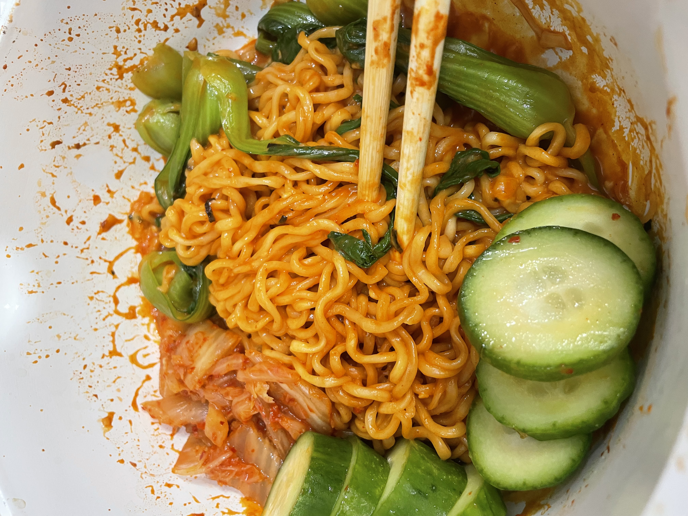
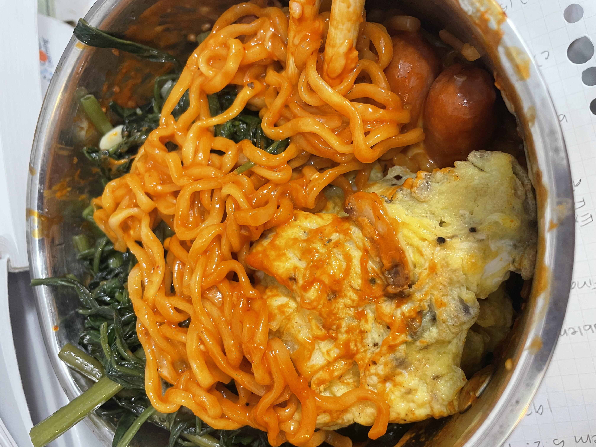
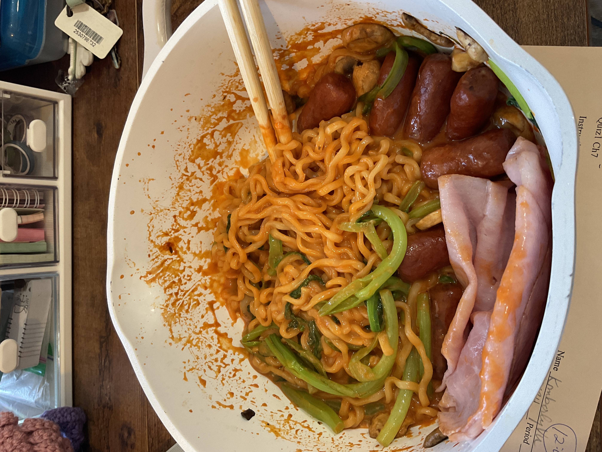
music
kimberly listens to a lot of music. one of her hobbies is literally laying on her bed while listening to music. she listens to a lot of music on repeat,
which is because she likes staying in her comfort zone.
a couple of her favorite artists include:
- the 1975
- paramore
- fleshwater
kimberly doesn't have a lot of favorite artists because she switches up her music taste every single month. it is kinda crazy. it's similar to how
she changes her hobbies and interests every month as well. however, she's always stayed consistent with coding and math! #womaninstem!!
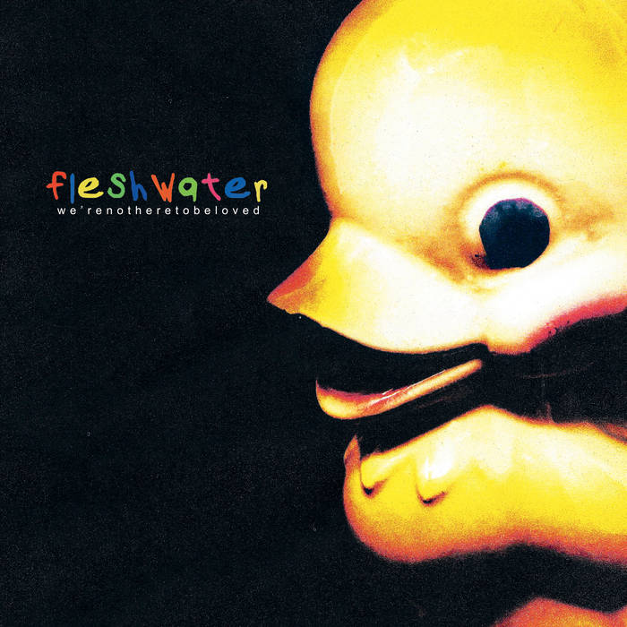
metal
there is a separate subsection for metal because it holds a special place in kimberly's heart. also, kimberly changes her music rotation. a lot.
metal is one of the genres that she listens to seasonally, which is why it deserves its own section. she strictly listens to only metal during the
winter. otherwise, she's listening to it while she's stressed or wants a break from the usual rnb and chill songs.
that might seem counterintuitive since metal is a bit aggressive, but it helps her release whatever she wants to let out.
also, did you know that people who listen to metal have similar personalities to people who listen to classical music? very cool!
kimberly didn't listen to metal before and was very into bedroom indie pop. however, she discovered a song called custer by slipknot and...
she was terrified. she had never listened to anything as aggressive as that song before. and then she listened to it again...and again...and she was HOOKED.
she doesn't know a whole lot about the distinction between metal genres. in fact, she doesn't even know if some of the songs she listens to are metal.
anyway, here are her top favorite songs that are hopefully metal or else this would be really embarrassing:
- without a whisper by invent animate
- what was really said by fleshwater
- linda claire by fleshwater
- risk by deftones
- two-way mirror by loathe
- a sad cartoon by loathe
- gifted every strength by loathe
- psychosocial by slipnkot
- ...and of course, the one who started it all, custer by slipknot
there's quite a few more so let's just gonna leave it at that...
other awesome music
since kimberly doesn't listen to metal all year-long, what else does she listen to?? she listens to a lot of 1975 and has been listening
to mostly the 1975 for the past month. she also likes paramore. here are some of her favorite songs across all genres:
- it's not living (if it's not with you) by the 1975
- settle down by the 1975
- somebody else by the 1975
- decode by paramore
- ain't it fun by paramore
- future by paramore. this song is really long for no reason and it's mostly instrumental but it just speaks to kimberly...
- dark thoughts by lil tecca. didn't see that one coming now did you!
- supermassive black hole by muse
- lights out, words gone by bombay bicycle club
- i'm not gonna teach your boyfriend how to dance with you by black kids
- hold on, we're going home by drake and majid jordan
- staring by tipling rock
kimberly's rotation of favorite songs changes a lot, so check back in a while to see if it updates!

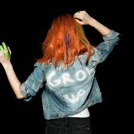
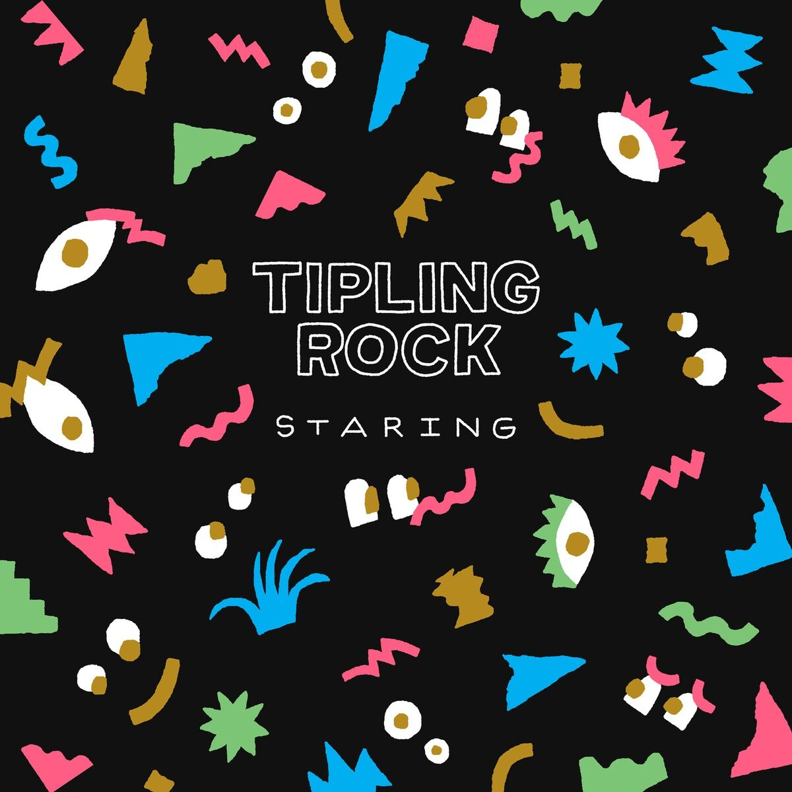
here is kimberly's main playlist as of now. she changes playlists approximately every 6 months.
(last updated on 6/14/25)
collector kimberly
kimberly has always loved collecting things. she had an obsession with crystals for a while (which are still in her bedroom) and pokemon cards.
she still has an obsession with stationery, textbooks, and figurines. she stopped buying pokemon cards because she was wasting money
and never got any good cards. however, she still has this app on her ipad to fill her addiction for opening pokemon packs.
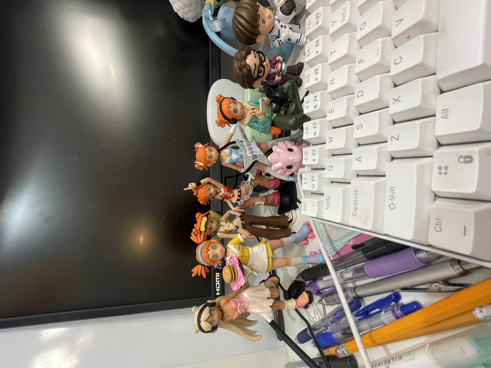
figurines
one of kimberly's biggest collections is her figurine collection. all of kimberly's figurines are somewhere on her desk,
which also has shelves. she has probably spent over $200 on all of her figurines. if the cost of gifts were included, it would be over $300.
kimberly also really likes peach riot from popmart, and she has 6 figurines. 5 of them are gigi, which is absurd. why is gigi infiltrating
her peach riot purchases?? please...all she wants is a frankie figurine for once...just one...
other than peach riot, kimberly also likes to collect other popmart figurines. she has two big bang theory figurines which are howard and leonard.
her favorite character is leonard by the way!! kimberly also has 5 molang figurines, and each one was around 20 bucks. that means in total her entire
molang collection cost $100. kimberly did not think about this until she wrote this. it is probably time she rethinks where her money goes.
kimberly also has two funko pop figurines. one is of a nerdy hello kitty which she thinks represents her very nicely, and a pokemon that she forgot the name of.
she has a lot of random figurines that she bought in vietnam too. a lot of them are sanrio related.
she hopes to buy hirono figurines, but knows that she will probably end up spending another $100 dollars trying to get the ones she wants. it is probably
best if she stops this obession before she goes to college and is in extreme debt. gulp.
textbooks
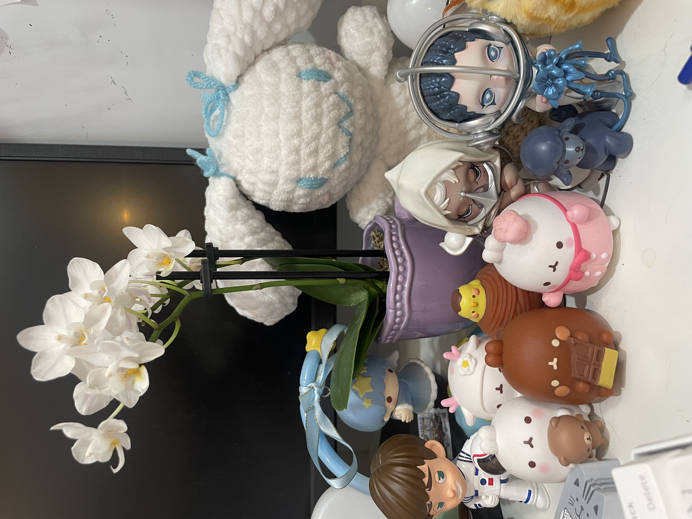
the other biggest collection that kimberly has is her textbooks. kimberly is very curious about a ton of different topics. she feels the need to learn everything and has textbooks on a bunch of
topics that she wants to learn. she buys a lot of her textbooks from the library bookstore since they are really cheap. to give you an
idea of how cheap they are, she recently bought a calculus textbook, written by james steward, for just $2. it was in peak condition and had
no creases, marks, anything. it was like it was brand new. AND FOR $2!!!! she also bought a linear algebra textbook this week from the same
library.
in total, kimberly has around 22 textbooks. topics covered include coding, physics, chemistry, biology, and of course, math. as you can tell,
kimberly is quite passionate about math.
kimberly's goal is to finish reading half of her linear algebra textbook and half of her calculus textbook by the end of summer. she will update
this website with her progress when school starts. a separate section will be dedicated to all the goals that kimberly wants to achieve by the end
of summer since she is obsessed with goal-planning and organization.
just wanted to say that kimberly struggled a lot with the css part of this. she hates using css and is very inexperienced. she has to search
up the tiniest things on google, like how to access a class and id. she may or may not need to take a html and css course over the summer...
cinnamoroll
in addition to kimberly's collection of many figurines, textbooks, and other silly stuff, kimberly loves to collect cinnamoroll
items. she has tons of cinnamoroll stickers, plushies, keychains (a lot of them), figurines, bandaids, binders, pouches, a floor mat...
there's a lot.
kimberly's favorite cinnamoroll item is probably her cinnamoroll binder. as mentioned before, she is obsessed with stationery and buys
copious and unnecessary amounts of it. the binder will be put in great use during her junior year when she is taking many classes...sighs...
fun fact: kimberly's pfp on the aops community site is cinnamoroll. aops stands for the art of problem solving, which is an organization geared towards
preparing kids for competition math. the community is full of competition math nerds and kimberly appreciates it a lot, because she doesn't know
many people in person who have a passion for math.
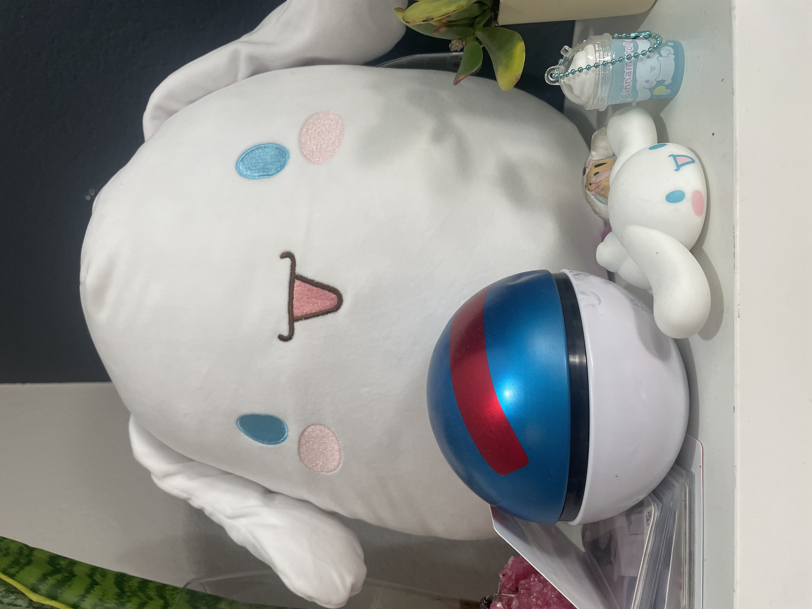


math
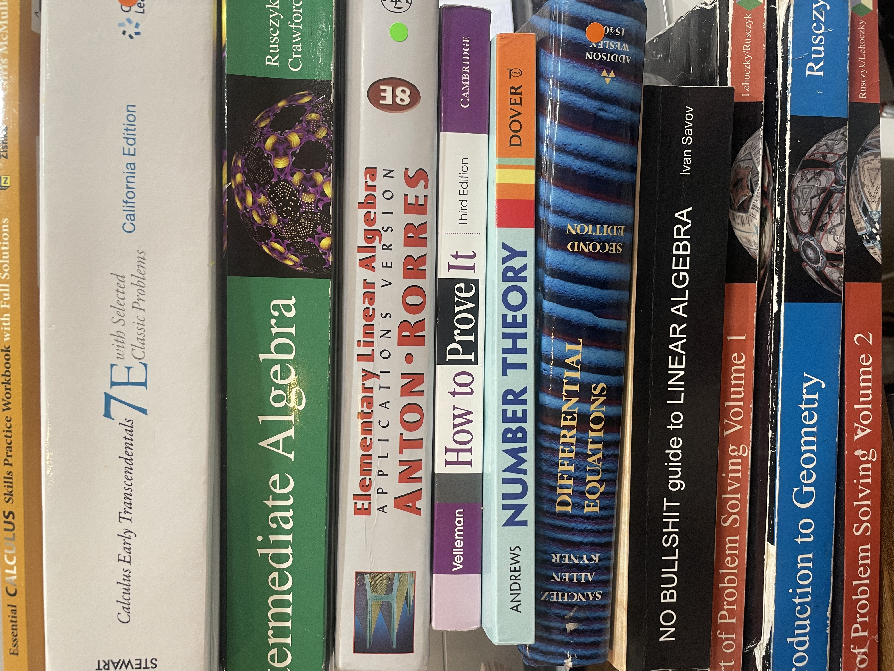
kimberly has loved math starting from the moment she learnt how to do long addition and subtraction. she learnt how to do long addition and subtraction
through her mom. she would sit down at the dinner table adding numbers together. sometimes she would also ask her mom's nail clients to give her long
numbers so she could play around with them. one of her earliest fond memories is when her mom was giving her numbers to add together, and she accidentally
said "five-ty five" instead of "fifty five" :)
as kimberly continued her journey down the road of math, her passion only grew stronger. she never struggled with math until she first starting solving for
the infamous x of algebra, and in eighth grade, and got an F on her first algebra quiz. she was so disappointed in herself and vowed to never get such a bad grade again.
she studied hard and would write on her whiteboard to review for quizzes and tests. not only did she ace the class, but she never got an F on a math quiz ever again,
let alone a B. AYYYYYYYY
kimberly made a lot of silly mistakes on the quiz which is why she got the F by the way. i swear i am not mad at math. on my soul. i am breaking the fourth wall.
here's the quiz btw i think it's cool to look at cus i literally pinned it on my wall and then would look at it whenever i felt tired from studying.
i also have all of my 100's from that same class just to show to myself how much i improved over the year!! okay i was gonna include a photo of the quiz as if
it were an important historical document but i think i threw it away cus when i opened the folder there were only the quizzes and tests with 100's... kimberly kimberly kimberly...
soon after algebra, kimberly took geometry over the summer because she simply couldn't go an entire summer without doing math. she also wanted to get ahead, but doing
math during the summer was the majority of the appeal. while taking geo over the summer, kimberly started to get more familiar with competition math as well after
finding out and participating in the new science olympiad of her middle school. she regret not finding competition math sooner because she was afraid she would never be
well prepared enough to be on everyone else's level, but she persisted nonetheless.
to this day, kimberly still enjoys doing competition math. she didn't study a lot during her sophomore year and therefore did not do very well on her first
AMC 10 test, but she has developed a system for studying and hopes to qualify for AIME this year!!!
competition math not only challenges kimberly and forces her to think outside of the box, but also reminds her that there's so much more to learn other than
plug-and-chug formulas. through competition math, she has met other incredible people who are just as passionate about math and learning as she is.
competition math has also taught kimberly not to give up. kimberly didn't study a lot last year not because she was busy, but because she was doubtful of her own
potential to improve. she gave up easily and decided that competition math was not worth the time and effort. however, math is what kimberly loves the most and
she decided to continue fighting!!! I WILL QUALIFY!!! oops i broke the fourth wall again lol i don't even know why i decided to write this in third person
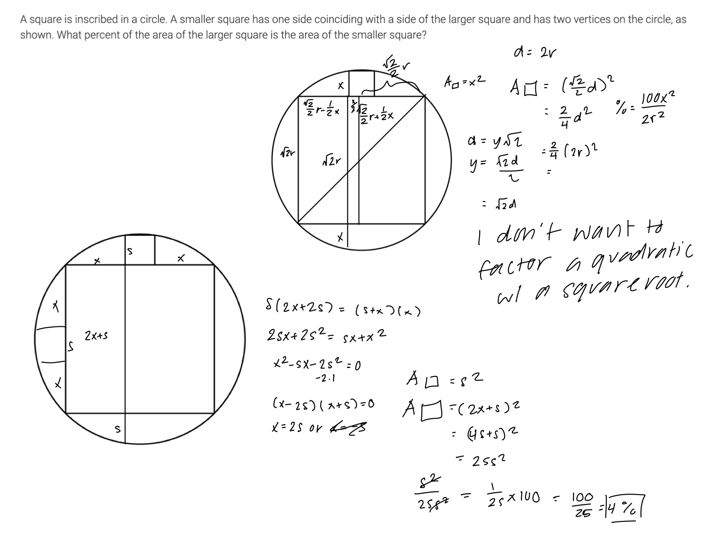
anyway back to the main show. kimberly has also never been challenged before which is what kimberly loves the most about competition math. it forces her to
work hard, to continue persevering even when she's pulling at the strands of her hair and has wrinkles ingrained in her forehead. additionally, kimberly has
found some of the most interesting concepts of math. everything comes together in the world of math and it's so freaking beautiful!!!
kimberly has also continued to explore other subjects of math because she's just a huge freaking nerd and loves doing math all day. remember how she mentioned
her collection of textbooks? yeah. there's a reason a majority of them are math-based. she's currently reading how to prove it by daniel j. velleman and is trying
to teach herself linear algebra for funzies. kimberly is no tryhard. actually that is kind of a lie but the main reason as to why kimberly is reading a linear
algebra textbook is because she likes math, and everything in her math classes for the past two years has been a repetition of stuff she's already learnt, just in a
different application. linear algebra, calculus, proofs, and competition math are very different from the standard high school math curriculum, and that's why kimberly
likes to learn about them!
fun fact: kimberly asked for and got a calculus workbook for christmas! her goal over the summer is to finish it from cover to back, just for funzies.
it'd be like a cool artifact to have to show people proof of her obsession with math.
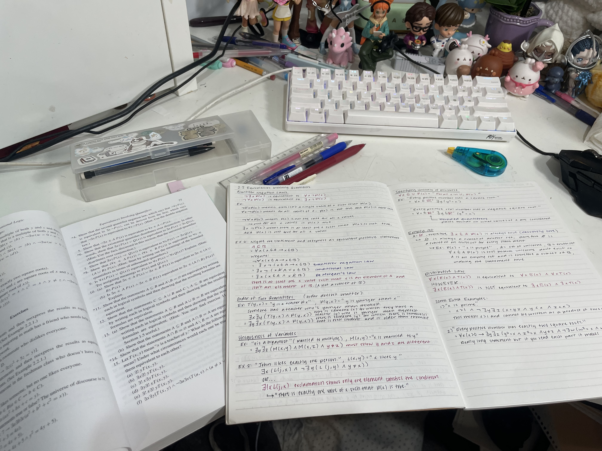
i took a photo because i like how math looks. does anyone understand what im talking about
coding
as you can probably tell by this website, kimberly loves to code! coding gives kimberly the power to make whatever comes to her mind, whether it be a cute little website like this one,
or a silly little videogame for a school project! i was really proud of that videogame by the way. i worked so freaking hard on it. in fact i think i worked over 20 hours coding the
entire thing because i was the only coder in my group. it was a great experience though because i am proud to say that i have finally accomplished my goal of making a video game!!
the videogame is called farmerettes and is on my itch.io account here! okay back to third person now.
kimberly first started coding when she was in eighth grade. technically, she started coding in third grade when her teacher introduced her to code.org and block coding. she loved solving
puzzles and being given the chance to create the project of her dreams!!
running
believe it or not, kimberly does in fact exercise and go outside. she might spend more than half of her day inside coding, doing math, or whatever she's doing in her free time, but she also
likes to go outside and move her body sometimes. running can be super painful and it's hard to persevere through the pain at times, but it's honestly really relaxing and gives kimberly time
away from everything else. even though kimberly loves coding and doing math and being a stupid nerd, she also gets really stressed about the future. these hobbies sometimes remind her that
life is not all fun and games, and that her hobbies will be important for her future career. they are hobbies that she will eventually pursue in the form of a degree and job. they are hobbies
that she has to work super hard at if she wants to be successful. they are hobbies that she must be a star in if she wants to get into her dream college (caltech btw lol).
running is one of the very few hobbies that kimberly doesn't stress about. collecting is one of the other ones because there's nothing to stress about lol... maybe the cost is something to stress about
but that's it. unlike math and coding, running lets kimberly focus on herself rather than her future. she's able to think about whatever she wants to think about without worrying that she should be
focused on working towards her future. running is the only time kimberly allows herself to take a break. fun but not very fun fact: kimberly gets stressed when she takes a break because she feels like
she should be productive all the time and if she's not being productive she will start to have self-loathing thoughts that are not so very good...however she doesn't have these thoughts when she's running
because running is still productive but doesn't require much thinking, so kimberly gets to think about whatever she wants and take a break without hating herself!!!
kimberly first started to like running in middle school when she had to run the mile on thursdays. she hated it at first but eventually fell in love with it because she had to push herself to improve.
she liked the challenge of running because she was not a very athletic middle schooler (quarantine was a not so good era for kimberly vu...). as she continued to run and push herself, she started to
run a faster mile!! her fastest time she got in middle school was...i actually kind of forgot. i think it was around 9 minutes though. that's not very fast compared to my time now but i'll get to that.
kimberly decided to join track in highschool and let's just say she made a mistake. she meant to join cross country but literally forgot to and instead signed up for track. how silly of her indeed!
she ran the 400m and 200m and she was not the fastest but she also wasn't the slowest (i'll list my prs later so just wait for that if you're curious i guess). kimberly also had to do weight-lifting
for track and that was her favorite part. kimberly loves weight-lifting because she's kind of good at it... unlike sprinting. however, the best part of track was the friends she made. she had a nice
little group, but half of the people in her group were leaving the next year. kimberly was very sad but it got her thinking...stay in track or quit????
obviously, kimberly quit track. HOWEVER, kimberly did not give up on sports even though she was very close to doing so because she wanted to focus on her academics but then she would've never
exercised again and gained all the weight back from quarantine that she lost during track, so she joined CROSS COUNTRY (XC) AKA THE BEST SPORT EVER! maybe not the best because she sometimes
regrets choosing to join a sport that requires you to embrace the summer heat, but she loves it more than she hates it. she thinks of her cross team as family and has made very close friends
from xc. xc has also taught her to work hard for what she wants. that was the main reason why she fell in love with running in the first place, but xc really solidified this skill.
xc is partially the reason why kimberly decided not to give up on preparing for math olympiad too, because she learned that she can't just give up when things get hard. it's obvious that you
have to work hard for what you want and that you can't just give up, but kimberly never experienced what it was like to actually apply this concept to her life. after joining xc, she has
applied this concept to literally everything she does because she is practically forced to when she runs. she is used to pushing herself because of xc and is able to push herself in other
aspects of her life. there is a reason why she's coding this website over the summer and studying everyday for math olympiad. xc taught her how to!!! kimberly has also met some of the hardest
working people through xc and they inspire her to continue pushing through the pain of life and school! she knows that she is no longer alone the infamous fight of achieving your dreams, because
there are a bunch of people just like her in xc that are also fighting for the same reason.
other than the very awesome self-transformation that xc has brought kimberly through, the running meets and practices are actually FUN. it hurts to run and push yourself to the brink of
passing out if you're like kimberly and don't get sleep, but running with your friends and talking about life is very stress-relieving and why people love xc. the xc meets are also full
of life. everyone is cheering for each other and after your race, you get to cheer for others and be proud of them for working so hard! you also get to buy yummy food and explore the cool
area around the race. another aspect of xc meets is the competition part. you're competing for your team but they'll be proud of you no matter what. you're not just running for yourself,
but you're running for the people that you've trained and suffered with. you're all pushing yourselves for each other and it's a great feeling. i don't really know how to describe it because
i'm not very good with words but if you're in cross country, you understand! getting a good time is also really nice and is concrete proof of your hard work. even if you don't pr, the mere
fact that you've finished without quitting is a great achievement. kimberly just really likes to cheer for her teammates and see how far she can push herself during a race.
one key race that will be ingrained into kimberly's brain forever was league finals. league finals is pretty much the race that determines whether or not a team goes to the other big
state-wide race, so obviously there was lots of pressure on kimberly to do well for her team. this was probably the most painful race for kimberly ever because she was kind of dying.
not only was she kind of dying but she was worried that she would hold her team back since she's like the second slowest on varsity. she passed some people and they were yelling stuff like
"we need you kimberly! pass the girl in front of you! every point counts!" like woah the stress could not have gotten stressier. also kimberly is usually able to sprint at the end of her
races since that's where you kick and go faster so you don't have to stare at the finish line as you slowly tread towards it and suffer. however, kimberly was not able to in this race
because she was literally going to die. she could not move her legs any faster. HOWEVER IT WAS NOT IN VAIN!!! her team was able to advance and kimberly also got her fastest time ever :)))
the reason why this memory is so ingrained in kimberly's brain is because she felt a very big sense of accomplishment and euphoria after the race because she not only was able to push herself to
get a great time, but she also didn't let her team down. she raced this race super hard because, unlike the other races, her team was actually counting on her and that gave her the greatest speed boost
of all!
kimberly also got a cool medal once for being in the top 20? of a race and it felt very good to see how far her hard work could get her! anyway, as you can tell, kimberly loves to run since this
section is the longest out of all the others. running has completely transformed kimberly as a person so she think it's pretty reasonable to write this much about it.
prs
after all that blabbing, here is what you guys probably don't even care to see unless you're also a runner. MY PERSONAL BEST TIMES!
-
400m: 1:11.63 (2024)
-
200m: 30.85 (2024)
-
800m: 2:49.31 (2025)
-
1600m: 6:08.96 (2025)
-
3200m: 14:04.39 (2025) also i never really exerted my great efforts into running the 3200m because it was always for some extra points so that's why it's not the most awesome time
-
5k: 21:55.0 like exactly it's kinda crazy (2025)
-
mt. sac...: 23:07.8 (2025)
i listed my pr for mt. sac because to me it deserves distinction since the course is infamous for being torturous and i want to see how i improve in this one specific course!
(last updated on 6/18/25)